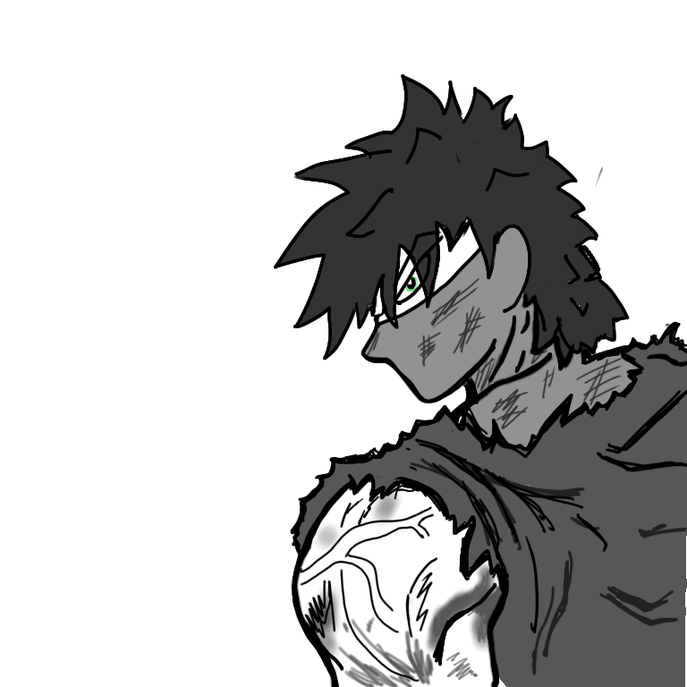

In the lush green village of Aren, in the Kingdom of Malazan, Artemus trained extensively under the Sage Apsalar. It was early morning when he would wake up, exercise extensively, climb the Great Mountain Nazir and even in the thin air on the top, train, train and train… For he knew the goal that he had in his mind was not easy. After swinging his sword for hours and casting various magic spells, he would also mentally train himself, for Artemus knew that the battle he would fight could not be won by brute force alone, but he would also need to use his wits to win it. After his training routine, which was a daily job now, he returned to the hut, where the Sage stood, with his ever so serious face.
A smile broke on Apsalar’s face, as he said “I have taught you everything I know. Now, as a final test to know if you are ready, you must accomplish a great feat.” Artemus' face turned serious, as he knew that the task that the Sage would give him wouldn’t be easy. After all, whenever the Sage felt that the Prince had reached a certain level of skill, he would give him such challenges to prove his abilities. It was in these challenges that he had spent days struggling, fought magical beasts, faced life-threatening situations, achieved the impossible by slicing through impermeable objects. As he was lost in these thoughts, the sage continued, “You must defeat the Witch Triss who lives on top of the Mount Nazir and kill her. She is accomplished in magic as well, and it will be a true test of your abilities to defeat her.”
Artemus had heard of the witch since he was a child who lived in the Village. Some Villagers discarded her as a myth, while others were scared of her, despite her not making an appearance in over a hundred years…
Artemus, with a chiselled body like that of a lion, was ready to complete this final test. After all, vengeance makes people stop fearing even life-threatening situations, and Artemus already had a burning desire to exact his revenge - against none other than the Emperor of Malazan. None of the villagers in Aren, save for the Sage, knew where Artemus came from. It was just one day that they found the Sage tending to a child. The Sage had told them that it was the child of his distant relative, who had been martyred in the War. Not many believed it, but they didn’t question the Sage out of respect for him.
Even Artemus didn’t know who he indeed truly was until he was fifteen, and the Sage told him to train hard enough to have his sword slice through the Darius Boulder, that was considered unbreakable by many villages. Although the teenage Artemus did have hazy memories of soldiers marching, drowning in a river, weeping as arrows and swords swam in his way, it all seemed like a distant dream to him. As Artemus stood in front of the large piece of rock, he couldn’t seem to be able to break it - one end of the rock seemed so hard that his sword seemed to shake so hard that it would break, while the other seemed so soft that his sword would get stuck in the sand-like region of the boulder. He tried hitting the stone at random points, but either the point where he tried to slice was too hard or too soft to be sliced properly. The sage hinted - “Everything, no matter how hard or soft, has a single point of weakness.”
It was a few days later that Artemus realised that he could simply use a technique of dividing the block into two parts after each hit and hitting the part where it was more likely to find the point where he could hit the rock properly, since the soft rock kept getting harder on moving to the other side(right). Thus, if he hit the rock and it was too hard, he would choose the point to hit between the left point and the point he hit, and if it was too soft, he would hit between the right point and the point that he hit. Thus, with this approach, which he later learnt was the Binary Search, he was able to hit sufficient number of points on the large boulder to find the point where his sword smoothly sliced through it. This feat had left lot of the villagers surprised, as it was considered to be an impenetrable rock since ages.
However, it wasn’t the praise of the villagers that was the reward for young Artemus. It was the knowledge of the events more than 13 years ago that was his reward for the feat. The Sage told him the truth - the King, murder, Vizier, as memories that were deep buried inside him for 13 years came flashing back. He wept and mourned the events that had conspired 13 years ago, and vowed revenge, and made this vengeance his sole driving force for the coming many years. It was that day itself when he had made the resolve - to murder the king.
Today, Artemus stood in the dark forest atop the humongous mountain, with the fog covering his vision, he cautiously stepped ahead inside the forest. He could sense a form of dark magical power radiating from one edge of the forest, and he kept walking towards the source. As he followed the source, he was encountered by a maze. He knew this was one of the traps to stop anyone from reaching the Old Witch. Since he had no scarcity of time, and the boundaries of the maze didn’t seem to extend too far away, he decided to use Depth First Search to find the exit of the maze. He used two coloured magical dust, and as he went along a particular path, he sprayed pink magical dust at each junction. When he would reach a dead end after going along a path, he would come back to the last junction where he had unvisited paths, and after visiting all the paths possible at a junction, he would put blue magical dust at that junction, signifying that he had visited all possible paths from that junction. Thus, he ended up taking all possible paths in the maze, and because of the rather easy nature of the maze, he was able to find the correct path leading out of the maze within 5 hours.
As he continued along the swampy paths, he encountered an old hut, half broken and destroyed, that seemed to be the place the village inhabited. As he neared the place, he was greeted by bolts of electricity coming from the hut.
Artemus however, was able to quickly dodge that. As he ran from one place to another to dodge the bolts, he saw a dark figure, firing these bolts while standing at the door of the hut. Realising it is the Witch, Artemus fired his fire magic at her. She was able to repel it, but as Artemus tried to close the distance between them, Artemus saw that the Witch was heaving, and was really old. However, she continued firing bolts at her target, even laughing under her heavy breathing. Artemus knew that a combination of ice and fire magic would stun her, and he fired both of them at her one after the other. And lo! The with screamed, as she was rendered motionless. Artemus used this moment to run at her with his full strength, and hit her with continuous blows of his magical powers.
After landing blows after blows on the Witch, and disabling her powers, the witch stooped on her legs. She begged to Artemus on her knees, “Please leave me. I know who you are, I can help you. I know that the King Laseen is the one…”, but before she could finish her sentence, Artemus went into a fit of rage upon hearing the name. It was as if his arms had moved by themselves, that he sliced his sword across, and with a high pitched shriek, the Witch’s dead body lay in the hut.
Artemus was scared by how ruthless he had turned, and how he had almost lost compassion upon being reminded of the fate that was sealed for him seventeen years ago. As he descended down the mountain, he knew that he was mentally prepared to do what needed to be done. As he neared Sage’s hut, he knocked on the door. The Sage greeted him, and as he saw his creation - the result of years of training, he spoke in a victorious tone - “You are ready!”
However, even with the skills that he had acquired, he knew that he wouldn’t be able to take on the army that was possessed by the King. He told the Sage, “I will go to various warrior clans and villages to gather their support. Once I have a big enough army, I shall be able to take on him and have vengeance.” Since the public had been rather unhappy with the rule they were being subjected to, Artemus knew that they would be a part of his mutiny against the King. However, he knew that it would be difficult to gain their trust. Despite this, he was confident that upon learning the nature of his origins, the Village heads would give him complete support. However, he knew that this was a double-edged sword, and if some wrong people were to know of it, it might heavily endanger his life.
The Sage, who knew and approved of Artemus' plan, told him “Go to the Village of Zetopia. You will be able to gather armour and weaponry of the highest quality from there. The people there will also show you the path to other Villages, that would be highly beneficial in your journey.” It was with the resolve in his eyes to exact revenge, that Artemus left for Zetopia, in a journey to defeat the King.
